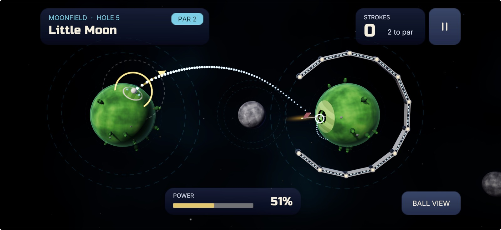
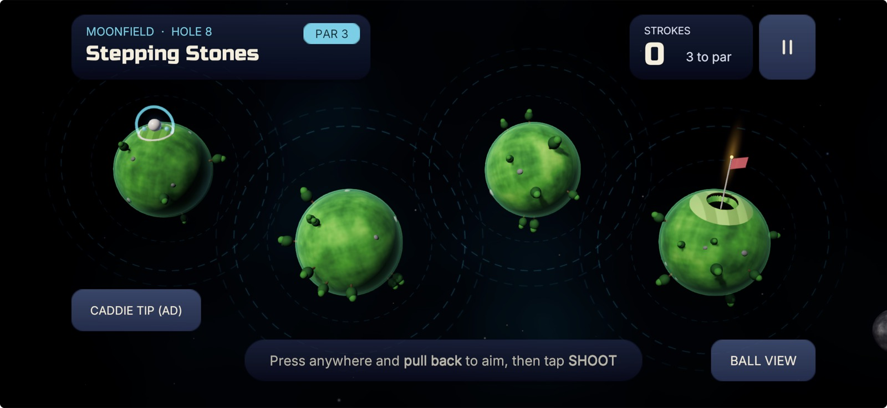
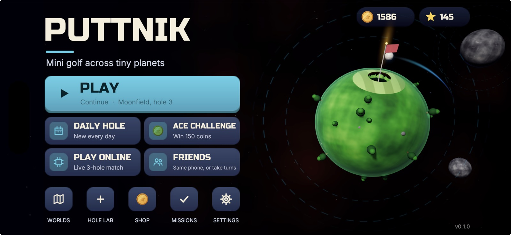

[ puttnik ] · mini golf in space
Testing nowon our own iPhones · TestFlight next · then the App Store
Mini golf across tiny planets.
Flick a glowing ball off a planet and let gravity take over. It curves around moons, slingshots past gas giants and skims black holes — and if you read the sky right, it drops into the cup on a distant world.

holes across 10 worlds
players online, each in their own time
physics steps a second
new hole every day


[ ways to play ]
Every hole is a short physics puzzle.
A shot replays exactly on any phone: the ball runs on our own physics, from the tee, the flick and the hole’s seed.
Ten worlds of nine holes. Stars unlock the next world.
One hole a day, with a Game Center leaderboard.
1–4 players on one phone, with a scorecard between holes.
2–8 players online, each playing the same course in their own time.
2–4 players in real time, with the other balls shown as ghosts.
Build your own holes and share them as a code or QR — once you’ve beaten them at par.
[ ten worlds ]
Each one adds a new idea.
From gentle gravity curves to the Grand Tour, where everything comes back at once.
Built with overcli.
Puttnik brought the share codes, QR codes and Lab pattern that Glidegang’s Course Lab now uses — all of it built with overcli.